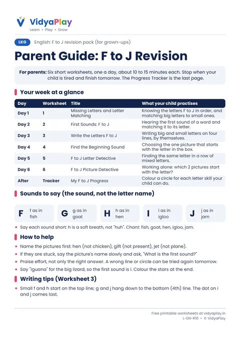
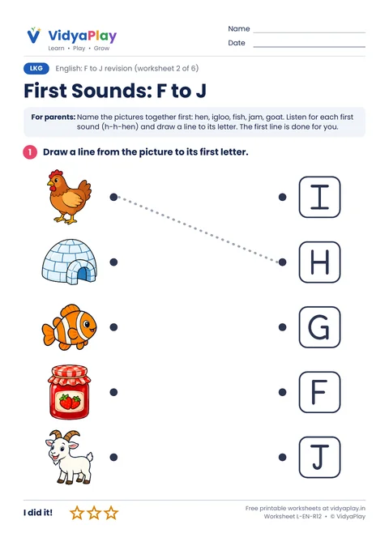
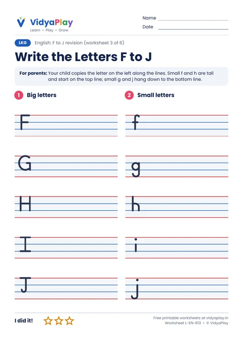
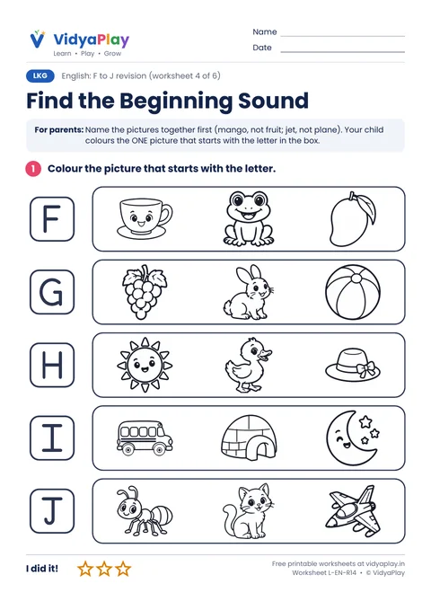
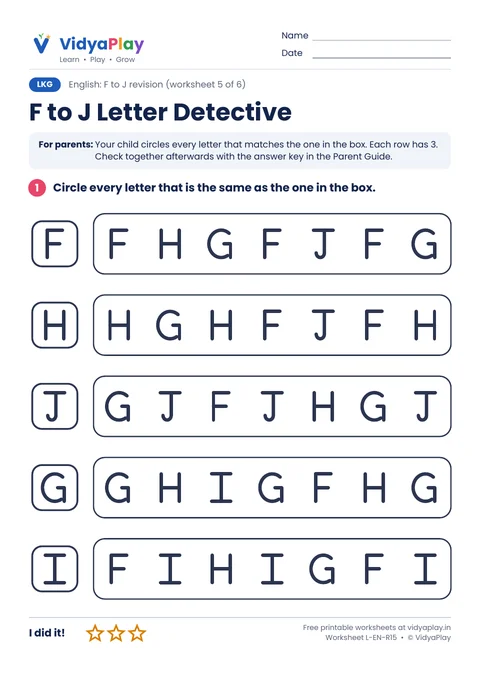
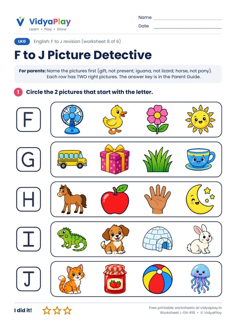
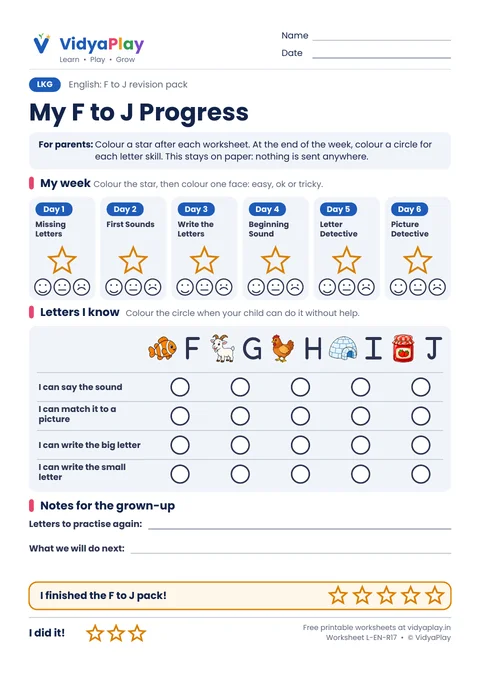

F to J Revision Worksheets for LKG
Six short worksheets to revise the letters F to J in one week: find the missing letters, match first sounds, write on the four lines, and play letter and picture detective. With a parent guide, answer key and a progress tracker.
Free · A4 PDF · Prints in black and white · Ages 3.5 to 5
The whole F to J revision pack (9 pages)
Parent guide, six worksheets and the progress tracker in one file, in the order to use them.
-

Worksheet 1Parent Guide and Answer Key
Your 6-day plan, the sounds to say, writing tips and all the answers.
Download PDF -
 Worksheet 2
Worksheet 2
1. Missing Letters and Letter Matching
Write the missing letter, then match big and small letters.
Download PDF -

Worksheet 32. First Sounds: F to J
Say each picture and draw a line to its first letter.
Download PDF -

Worksheet 43. Write the Letters F to J
Write big and small letters on the school four lines.
Download PDF -

Worksheet 54. Find the Beginning Sound
Colour the one picture that starts with the letter.
Download PDF -

Worksheet 65. F to J Letter Detective
Circle every letter that matches the one in the box.
Download PDF -

Worksheet 76. F to J Picture Detective
Circle the two pictures that start with each letter.
Download PDF -

Worksheet 8My F to J Progress
Stars for each day and a grid of letter skills to colour.
Download PDF
Tips for parents
- One worksheet a day, about 10 to 15 minutes. Stop when your child is tired.
- Name the pictures together first, then let your child try alone.
- Say short, crisp sounds: f, not "fuh". The sound, not the letter name.
- The pictures in this pack are made with AI art.